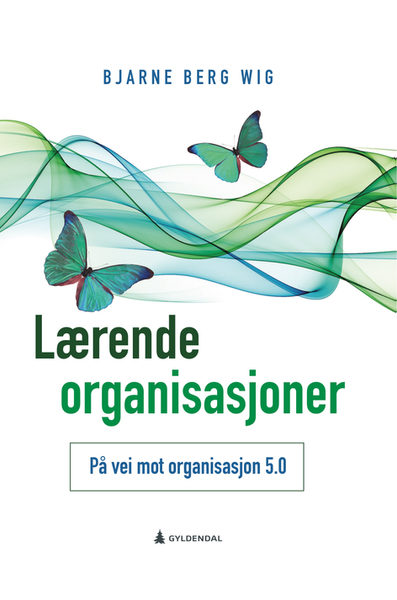

Books & Resources
Books from ILO, with companion pages, plus videos and downloads on learning organisations, Lean and systems thinking.
Books by Bjarne Berg Wig
Each book has free companion pages: chapter notes, videos, templates and downloads. Three of the books, and most of the material, are in Norwegian.

Systems Thinking with Obeya
Bjarne Berg Wig's guide to using the Obeya room to see the whole system, align leaders and learn faster together. The free companion pages follow the book chapter by chapter, with videos, articles, tools and templates.

Lærende organisasjoner
Learning organisations. The book gives leaders, union representatives and other change leaders the knowledge they need to move from an outdated system of management by objectives, bureaucracy and hierarchy to an organisation that removes waste in all its forms and releases the large, often hidden, resources in every person.
It describes the shift from management by objectives to real learning organisations and learning systems, in three parts: Past asks how we ended up here and how we get out; Present is about moving from "implementing Lean" and continuous improvement to becoming a real learning organisation; Future asks how we develop self-organising, open and participatory organisations.
A common thread through the book is systems thinking: awareness of how systems work and how we think about them. To change organisations, we have to change how we think.

LEAN – Ledelse for lærende organisasjoner
Lean: leadership for learning organisations. Lean is about creating products and services with the most value and the least waste, by concentrating on flow, open processes and continuous improvement.
The book and its digital resources are made for a breakthrough for Lean: a turning point where continuous improvement and learning at work become everyday practice, and every leader and employee in municipalities and businesses takes part in improvement and renewal. It is about moving from seeing work as efficient execution to seeing work as a learning process.
Part I explains how to develop a breakthrough strategy. Part II covers the methods and tools for introducing and developing Lean in a municipality or private business. Part III, new in this edition, is about real learning organisations: learning leadership and the use of mentoring, coaching and problem-solving dialogue.

Quality Improvement as a Craft
Quality Improvement as a Craft (Hydro Media, 1996) was the main training material for continuous improvement teams in Norway for many years. It is still very valid and gives an overview of many of the methods and tools we know today under the name Lean. The book is still used in teaching at academic courses.
Please contact us with your name and e-mail address and we will follow up on your book order.

Det er ledelse
It's leadership: quality management for the 21st century. This e-book is the textbook for TQM (total quality management) at several university colleges and universities. Its companion page also has a range of resources for teaching quality management.
Recommended videos
Applying the Lens of Profound Knowledge
Robert Lloyd, PhD, from the IHI Open School course QI101.
Deming's System of Profound Knowledge
Robert Lloyd, PhD, from the IHI Open School course QI101.
Downloadable resources
Lecture notes, templates and articles from our courses and books – free to download. Many of the course materials are in Norwegian.
Lean Leadership – Part I: Leadership and culture
Course material in Norwegian from the programme “Lean leadership for learning organisations”.
- PDFContents of Part I – Leadership and culturePDF · 27 KB · Norwegian
- PDFLecture notes #1, chapters 1–3PDF · 5.9 MB · Norwegian
- PDFWhat is Lean?PDF · 14.4 MB · Norwegian
- PDFLean leadership – historical backgroundPDF · 11.3 MB · Norwegian
- PDFIntroduction to Lean leadershipPDF · 12.0 MB · Norwegian
- PDFHow the Lean leadership programme is structuredPDF · 14.6 MB · Norwegian
- PDFPlanning for a breakthroughPDF · 9.5 MB · Norwegian
- PDFMaster plan and Hoshin leadershipPDF · 16.4 MB · Norwegian
- PDFThe Lean MirrorPDF · 453 KB · Norwegian
- PDFTemplate: Lean MirrorPDF · 50 KB · Norwegian
- PDFSelf-assessment template (basic)PDF · 48 KB · Norwegian
- PDFThe unbeatable work teamPDF · 240 KB · Norwegian
Systems Thinking with Obeya – chapter resources
Articles and templates that accompany the book.
- PDFMaster plan, Obeya and Hoshin leadership (Bjarne Berg Wig)PDF · 315 KB · Norwegian
- PDFA3: learning system and systems thinkingPDF · 4.0 MB · Norwegian
- PDFLOS diagnosis – A3 templatePDF · 150 KB · Norwegian
- DOCScientific articles about ObeyaWord · 13 KB
- DOCObeya self-assessment sheetWord · 14 KB
- PPTValue stream mapping and ObeyaPowerPoint · 2.1 MB
- PPTVMCL and Hoshin kanriPowerPoint · 6.8 MB · Norwegian
Lean Leadership – Parts II and III
Working documents and templates from the book.
- DOCPart IIWord · 90 KB · Norwegian
- DOCPart IIIWord · 128 KB · Norwegian
- XLSSelf-assessment template – Lean MirrorExcel · 105 KB · Norwegian
Recommended reading
Articles and reports by other authors that the book pages refer to.
- PDFSummary of Laloux, Reinventing OrganizationsPDF · 1.4 MB
- PDFVMCL: build an adaptive organisationPDF · 704 KB
- PDFTanaka: the Obeya room (PDMA Visions, 2009)PDF · 3.7 MB
- PDFDerek Cabrera: why you should map systemsPDF · 1.6 MB
- PDFA3 notes: System of Profound KnowledgePDF · 1.1 MB
- PDFMike Rother: study of Toyota Kata practicePDF · 4.5 MB
- PDFExploring digital Obeya rooms (research paper)PDF · 912 KB
- PDFVINT: the fourth industrial revolutionPDF · 6.3 MB

Ready to build a learning organisation?
Tell us where you are today, and we will suggest the next step for your team.
or contact us directly: gabi@learnorg.global · +47 48 28 70 00